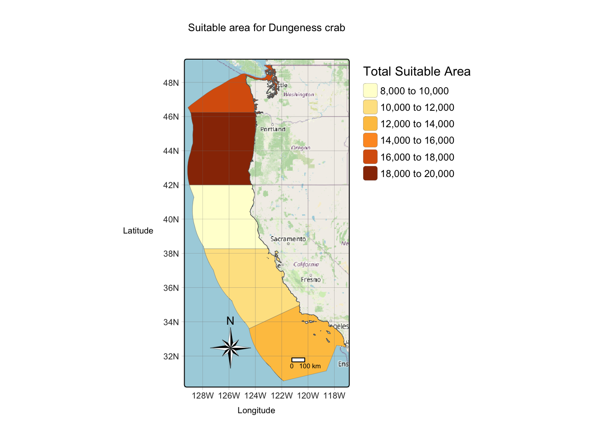
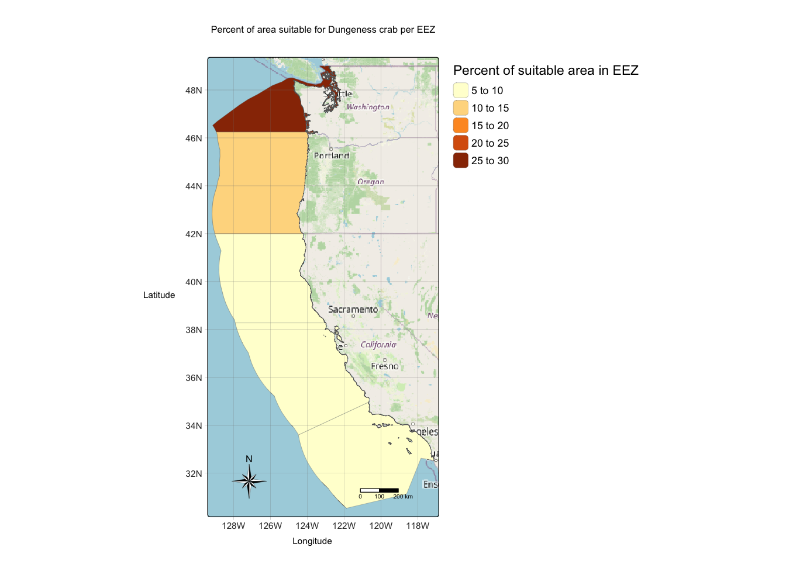
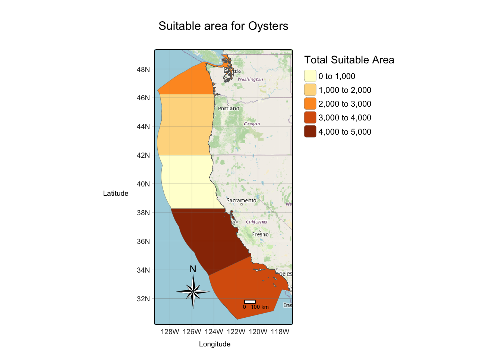
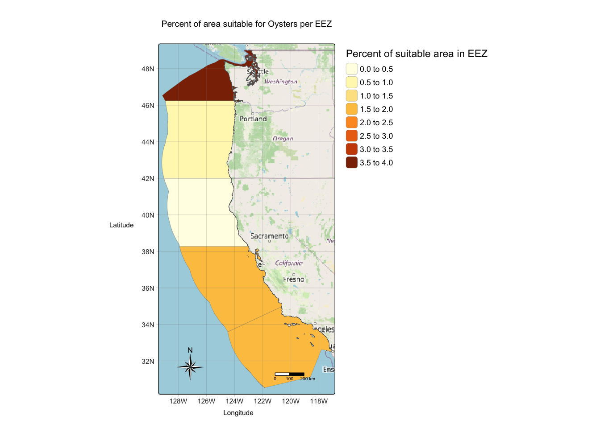

Find the full analysis and access to the data here!
Introduction
Marine aquaculture has the potential to play an important role in the global food supply as a more sustainable protein option than land-based meat production.1 Additionally, it creates opportunities to mitigate the the effects of climate change.2 Gentry et al. mapped the potential for marine aquaculture globally based on multiple constraints, including ship traffic, dissolved oxygen, bottom depth .3
It is important to understand what areas are suitable for commercial species to survive in order to make informed decisions about what species to involve in aquaculture. The purpose of this project is to inform what EEZs are suitable for marine aquaculture of different commercial species on the West Coast. To do this, I will create a function that will take depth and temparature conditions, species name, and the datasets to output maps appropriate for selected species.
Data
Sea Surface Temperature
I will use average annual sea surface temperature (SST) from the years 2008 to 2012 to characterize the average sea surface temperature within the region. The data used in this analysis was originally generated from NOAA’s 5km Daily Global Satellite Sea Surface Temperature Anomaly v3.1.
I will be designating maritime boundaries using Exclusive Economic Zones off of the west coast of US from Marineregions.org.
Analysis
Data Preparation
In order to create a function, I first manipulated the datasets to prepare them as inputs into the function. The datasets I manipulated were sea surface temperature (sst) and bathymetry rasters as well as data on the West Coast EEZs. I included sst data from 2008 to 2012 and took the mean sst during these years. Additionally, to work with both of the rasters together, it was important to match the CRS, extent, resolution and position of the sst and bathymetry rasters. The EEZ dataset was not necessary to alter to add to the function. This step allowed all three data objects to be used as inputs into the function.
Code
# load in packageslibrary(tidyverse)library(sf)library(terra)library(resample)library(tmap)library(maptiles)# read in west coast eez datawest_coast_eez <-st_read("data/wc_regions_clean.shp")
Reading layer `wc_regions_clean' from data source
`/Users/hopehahn/Documents/MEDS/WEBSITE/h-hahn.github.io/blog/2023-12-14-west-coast-eez/data/wc_regions_clean.shp'
using driver `ESRI Shapefile'
Simple feature collection with 5 features and 5 fields
Geometry type: MULTIPOLYGON
Dimension: XY
Bounding box: xmin: -129.1635 ymin: 30.542 xmax: -117.097 ymax: 49.00031
Geodetic CRS: WGS 84
Code
# read in sea surface temperature raster datasst_2008 <-rast("data/average_annual_sst_2008.tif")sst_2009 <-rast("data/average_annual_sst_2009.tif")sst_2010 <-rast("data/average_annual_sst_2010.tif")sst_2011 <-rast("data/average_annual_sst_2011.tif")sst_2012 <-rast("data/average_annual_sst_2012.tif")# stack the sst rasters from 2008-2012sst_stack <-c(sst_2008, sst_2009, sst_2010, sst_2011, sst_2012)# read in bathymetry rasterbathymetry <-rast("data/depth.tif")### MEAN SST FROM 2008-2012# raster of mean SST from 2008-2012mean_sst_stack <-app(sst_stack, fun = mean)# convert SST data from Kelvin to Celsiusmean_sst_stack_C <- mean_sst_stack -273.15# change crs of sst_stack to match bathymetry raster crssst_stack <-project(sst_stack, "EPSG:4326")### MATCH EXTENT, RESOLUTION, AND POSITION# crop bathymetry raster to match extent of SST rasterbathymetry_crop <-crop(x = bathymetry, y = mean_sst_stack_C)# resample data to match resolution of sst data resample_bath <- terra::resample(bathymetry_crop, sst_stack, method ="near")
Creating the Function
The inputs of the function are the species name, the three datasets previously prepared, and the environmental conditions required for each species (depth and temperature ranges). The function works by reclassifying the sst and bathymetry rasters to binary values, assigning a 1 for areas with matching conditions, and a 0 for areas that are unsuitable conditions, based on inputs. Overlaying the two rasters creates a raster that shows areas which match both the depth and temperature conditions.
The function then calculates the area of suitable area within each West Coast EEZ, and it also divides by the total area within each region, to calculate what percent of the total area match suitable conditions in each EEZ.
Using these areas, the function uses tmap to plot maps of the total suitable area within each EEZ as well as the percent of suitable area in each EEZ.
Code
# create function to accomodate for other species# this function assumes that rasters are the same resolution, extent, and CRSsuitable_area <-function(species, eez_polygon, sst_rast, bath_rast, sst_lower, sst_upper, depth_lower, depth_upper) {# reclassify# create matrix to classify species sst ranges as 1 and everything else as NA rcl_sst <-matrix(c(-Inf, sst_lower, NA, sst_lower, sst_upper, 1, sst_upper, Inf, NA), ncol =3, byrow =TRUE)# reclassify sst stack based off of previous matrix sst_stack_rcl <-classify(sst_rast, rcl = rcl_sst)# create matrix to classify species depth ranges as 1 and everything else as NA rcl_bath <-matrix(c(-Inf, depth_lower, NA, depth_lower, depth_upper, 1, depth_upper, Inf, NA),ncol =3, byrow =TRUE)# reclasify bathymetry data based off of previous matrix bath_rcl <-classify(bath_rast, rcl = rcl_bath)# find locations that satisfy both SST and depth conditions satisfy_conditions <-lapp(c(sst_stack_rcl, bath_rcl), "*")# ---------------------------------------------------------# create a mask of the oyster conditions that fall in west coast eez mask_eez <-mask(satisfy_conditions, eez_polygon)# rasterize data because its vector data# use extent of depth raster eez_rast <- terra::rasterize(eez_polygon, mask_eez, field ="rgn")# find area within each EEZ area <-expanse(mask_eez, unit ="km", zones = eez_rast)# percent of each zone that is suitable percent_suitable <-merge(eez_polygon, area, by.x ="rgn", by.y ="zone") %>%mutate(percent_area = (area/area_km2)*100)# ---------------------------------------------------------# plot map of total suitable areatmap_mode("plot")# plot total suitable area total_area_map <-tm_shape(percent_suitable) +tm_polygons("area",palette ="YlOrBr",title ="Total Suitable Area",lwd =0.2) +tm_basemap("OpenStreetMap") +tm_layout(legend.frame =FALSE,legend.outside =TRUE) +tm_compass(type ="8star", # add compassposition =c("left", "bottom"),size =3,lwd =0.2) +tm_graticules(lwd =0.2) +tm_xlab("Longitude", size =0.6) +tm_ylab("Latitude", size =0.6) +tm_scalebar(position =c("right", "bottom")) +tm_title(text =paste("Suitable area for", species)) # ---------------------------------------------------------# plot map of percent suitable area per EEZ# plot percent suitable area by region percent_area_map <-tm_shape(percent_suitable) +tm_polygons("percent_area",palette ="YlOrBr",title ="Percent of suitable area in EEZ",lwd =0.2)+tm_basemap("OpenStreetMap") +tm_layout(legend.frame =FALSE,legend.outside =TRUE,scale =0.8) +tm_compass(type ="8star", position =c("left", "bottom"),size =3,lwd =0.2) +tm_graticules(lwd =0.2) +tm_xlab("Longitude", size =0.6) +tm_ylab("Latitude", size =0.6) +tm_scalebar(position =c("right", "bottom")) +tm_title(text =paste("Percent of area suitable for", species, "per EEZ")) # ---------------------------------------------------------# print the mapsprint(total_area_map)print(percent_area_map)}
Results
To test this function, I inputted the suitable depth and temperature conditions for Dungeness crab, a commercial crab species. The resulting plot shows the amount of area in each EEZ region that match conditions conducive to Dungeness crab survival. These maps allow us to understand which EEZs are the most suitable for growing Dungeness crab in aquaculture (figure 1). I also wanted to test this function with another species, so I inputted depth and temperature conditions for Oysters (figure 2).
Code
# test function for suitable area for Metacarcinus magister (Dungeness crab)suitable_area(species ="Dungeness crab",eez_polygon = west_coast_eez, sst_rast = mean_sst_stack_C, bath_rast = resample_bath, sst_lower =3, sst_upper =19, depth_lower =-360, depth_upper =0)# test function for suitable area for oysterssuitable_area(species ="Oysters",eez_polygon = west_coast_eez, sst_rast = mean_sst_stack_C, bath_rast = resample_bath, sst_lower =11, sst_upper =30, depth_lower =-70, depth_upper =0)

Figure 1a: Map displaying total area suitable for Dungeness crab within each EEZ region

Figure 1b: Map displaying percent area suitable for Dungeness crab out of whole EEZ region

Figure 2a: Map displaying total area suitable for oysters within each EEZ region

Figure 2b: Map displaying percent area suitable for oyster out of whole EEZ region
Discussion
Because this function creates maps based on any inputted species, it is versatile in reproducing graphs across any commercial species. This is useful in streamlining the process of determining suitable aquaculture areas. However, there are a few limitations to this function. First, the datasets used as inputs for this function are very specific, and must be manipulated prior to using in the function. If using the same datasets that I did in the analysis, it is important to prepare them by transforming CRS, extent, position, and resolution in the same ways that I did. If using different datasets, the EEZ data must be vector data, and the bathymetry and sst data must be rasters that match in CRS, extent, position, and resolution.
This function also only creates maps for West Coast EEZs and does not account for conditions such as 3D complexity, substrate, nutrients, etc. It only accounts for depth and temperature. Many aquatic species depend on different environmental factors such as substrate and nutrients. In the context of aquaculture, the environment can be manipulated to accomodate for such factors, but in this case, we must also understand the environmental implications of manipulating natural resources.
Footnotes
Hall, S. J., Delaporte, A., Phillips, M. J., Beveridge, M. & O’Keefe, M. Blue Frontiers: Managing the Environmental Costs of Aquaculture (The WorldFish Center, Penang, Malaysia, 2011).↩︎
Rubino, M. C. (2023) Policy Considerations for Marine Aquaculture in the United States, Reviews in Fisheries Science & Aquaculture, 31:1, 86-102, DOI: 10.1080/23308249.2022.2083452↩︎
Gentry, R. R., Froehlich, H. E., Grimm, D., Kareiva, P., Parke, M., Rust, M., Gaines, S. D., & Halpern, B. S. Mapping the global potential for marine aquaculture. Nature Ecology & Evolution, 1, 1317-1324 (2017).↩︎